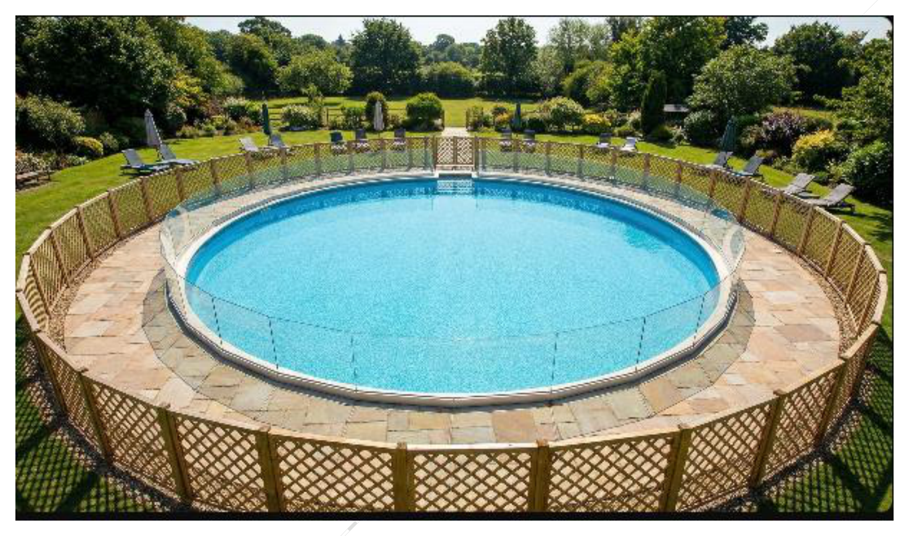

גאומטריה לכיתה ח'
9
פארק המזרקה
שאלת סיכום — המכרז העירוני. עיריית "מי־ים" מקימה פארק מים עגול בצורת "טבעת": מעגל פנימי (בריכה) וטבעת חיצונית (טיילת מרוצפת), עם גדר בטיחות סביב המעגל הפנימי וסביב החיצוני.
| מרכיב | מחיר |
|---|---|
| בריכה | 1,000 ₪/מ"ר |
| ריצוף | 100 ₪/מ"ר |
| גדר | 50 ₪/מטר |
נתונים: רדיוס הבריכה 5 מ', רוחב הטיילת 2 מ' (רדיוס חיצוני 7 מ').

- 6.חשבו את שטח הבריכה, ואת שטח הטיילת בלבד (הפרש בין העיגול הגדול לקטן).
- 7.מהו האורך הכולל של הגדרות (סביב הבריכה הפנימית וסביב המעגל החיצוני)?האורך הכולל =מ'
- 8.חשבו את העלות הכוללת של הפרויקט — לכל מרכיב בנפרד (מים, ריצוף, גדר).